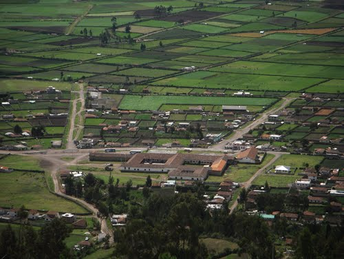
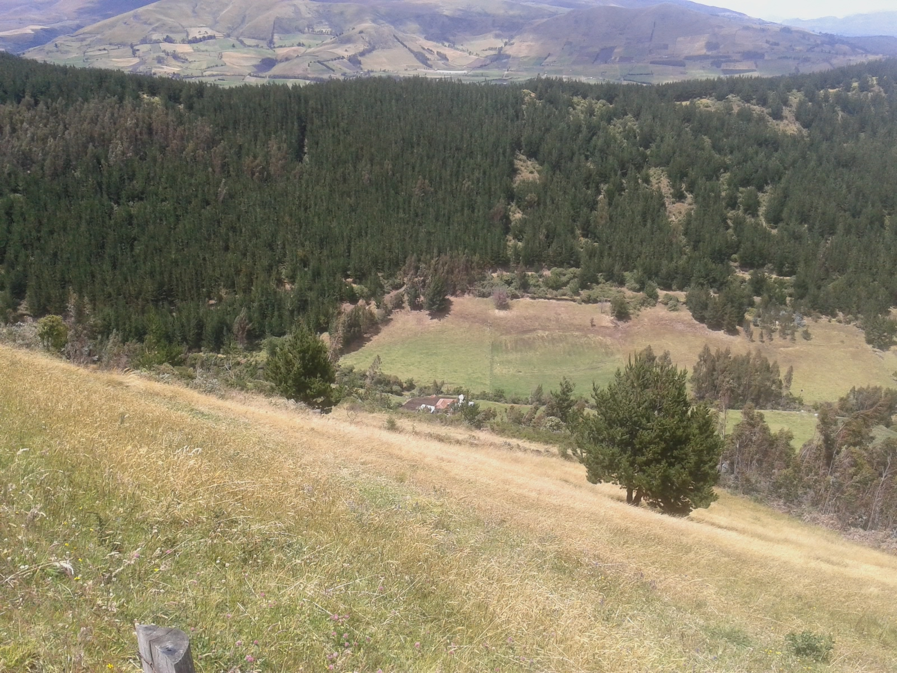
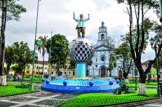

Cosechar hongos en los bosques junto a los pinos es una actividad emocionante, pero requiere precaución. Identificar correctamente las especies, recolectar de manera sostenible, respetar el entorno y cocinar adecuadamente son pasos esenciales para una experiencia segura y respetuosa con el ecosistema. 
Pesillo es una comunidad ubicada en la provincia de Pichincha, en Ecuador, específicamente en el cantón Cayambe. Esta comunidad se encuentra en la parroquia Olmedo, dentro del cantón Cayambe. Pesillo y sus alrededores ofrecen un paisaje impresionante, con vistas a las montañas y la posibilidad de experimentar la vida y las tradiciones locales.
Tras recolectar los hongos, se les pela y se someten a un proceso de secado en una secadora por varios días. Una vez secos, se dividen en trozos antes de ser empaquetados, preservando así su calidad y durabilidad. Este ritual tradicional resalta la conexión entre la comunidad y los recursos naturales, y asegura que los hongos estén listos para diversos usos una vez empacados. 
En la comunidad de Pesillo, existen los majestuosos pinos desempeñan un papel esencial. Estos árboles no solo adornan el paisaje, sino que también crean un entorno idóneo para la recolección de hongos. Durante los períodos lluviosos, los hongos florecen en el suelo cercano a los pinos, estableciendo una conexión única entre la vegetación y la biodiversidad local.
Su versatilidad en la cocina y su sabor distintivo los convierten en un ingrediente apreciado que realza la gastronomía local y cautiva los paladares de quienes los prueban. 